Qing Mao is a fierce Agility warrior who fights on the front lines in Hero Wars: Dominion Era. Bound by a tragic destiny to her fallen brother Qing Long, she channels her pain into devastating attacks that cripple enemy defenses. Her story is one of loss, determination, and an unbreakable sisterly bond that transcends death itself.
In this comprehensive guide, you'll discover everything you need to master Qing Mao: her unique abilities, optimal team compositions, stat priorities, and advanced strategies. Whether you're building your first front-line team or looking to optimize your roster, understanding Qing Mao's strengths and weaknesses is essential for success in the Land of a Thousand Dawns.
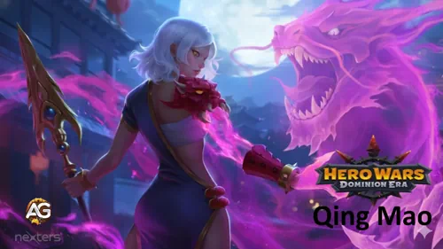
Qing Mao Guide - Hero Wars: Dominion Era, a game developed by Nexters.
Who Is Qing Mao in Hero Wars: Dominion Era
Qing Mao is a formidable Agility-based warrior whose tragic backstory shapes her combat prowess. After losing her brother Qing Long, she prayed to the dead gods of the Land of a Thousand Dawns, who answered by binding their souls together. This divine "gift" forces her to suffer in battle, releasing the tormented essence of what her brother has become. Her pain fuels her power, making her one of the most emotionally complex and tactically valuable heroes in the game.
Main Role: Front-line Warrior / Armor Reducer
Additional Role: Crowd Control (Blind) / Evasion Tank
Main Stat: Agility
Position: Fights at the front line
Qing Mao – Maximum Stats
Power
200,890
Agility
17,294
Health
554,556
Magic Attack
9,135
Strength
3,056
Magic Defense
10,706
Armor Penetration
37,150
Dodge
15,070
Armor
23,560
Intelligence
3,045
Physical Attack
118.454
Qing Mao's Strengths & Weaknesses
Strengths:
Armor reduction amplifies team damage
Blind effect disrupts enemy attacks
High dodge against physical damage
Weaknesses:
Vulnerable to debuff removers (Sebastian, Celeste)
Struggles against magic-heavy teams
Low magic defense
Qing Mao Skills Upgrade Priority - Hero Wars: Dominion Era
Understanding which skills to prioritize when upgrading Qing Mao can dramatically increase her effectiveness. Focus on her passive and crowd control abilities first to maximize team damage output.
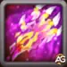
1. Qing Long (Ultimate)
Qing Mao summons the dragon spirit of her brother, which strikes the nearest enemies three times. Each hit deals physical damage, pushes enemies back (disrupting their positioning), and applies a burning effect for 5 seconds. The burn deals additional damage over time. This is a powerful ultimate that combines burst damage, crowd control, and sustained damage.
Damage per Hit Formula:36,772 (30% physical attack + 75 × level)
Qing Long Skill - Qing Mao, Hero Wars Dominion Era.
Evolution Priority:High – A strong ultimate that deals significant damage. However, it becomes truly exceptional only after unlocking Ascension V, which adds extra hits based on blinded enemies. Upgrade this third, after your passive and Spear of Dawn.
Ascension V: Wrath of Qing Long
This Ascension transforms Qing Long into a devastating ultimate. For each blinded enemy on the battlefield (up to 5), the dragon deals one additional hit. If you've blinded 3 enemies with Spear of Dawn, the dragon hits 6 times instead of 3 doubling the damage! This creates incredible synergy between her skills. The Ascension V upgrade is difficult to unlock (requires high Ascension level), but it's what makes Qing Mao a top-tier damage dealer in the late game.
Extra Damage per Hit:21,014 (20% physical attack + 3,000)
Extra Flame Damage:10,207 (10% physical attack + 1,200)
Maximum Bonus Hits: 5 (requires 5 blinded enemies)
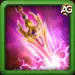
2. Spear of Dawn (Periodic)
Qing Mao throws her spear at the nearest enemies, blinding them for 3 seconds. Blinded enemies have drastically reduced accuracy, causing many of their attacks to miss. This provides excellent crowd control and defensive value. More importantly, each blinded enemy on the battlefield increases the power of her ultimate ability (Qing Long), adding extra dragon strikes.
Spear of Dawn Skill - Qing Mao, Hero Wars Dominion Era.
Evolution Priority:Very High – Essential for synergy with her ultimate. The blind effect provides both defense (enemies miss attacks) and offense (triggers extra ultimate damage). This skill is the key to unlocking Qing Mao's full potential when combined with her Ascension V ultimate.
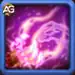
3. Dragon's Claw (Periodic)
Qing Mao slashes the nearest enemy with a powerful claw attack that deals damage based on the target's current health. This means it's most effective against enemies with high health pools the more HP they have, the more damage this skill deals (up to a maximum cap). This makes it excellent for taking down tanky front-line heroes. The skill has a 7-second initial cooldown and then activates every 23 seconds.
Damage Formula:21% of target's current health (0.1 × level + 10)
Evolution Priority:High – Good damage output, especially against high-HP enemies. However, it's less impactful than her other skills because it doesn't provide team-wide benefits or synergy. Upgrade this last, after focusing on her passive, blind, and ultimate abilities.
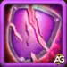
4. Open Heart (Passive)
This passive skill makes Qing Mao an armor shredder. Every time she attacks an enemy, she permanently reduces their armor for the rest of the battle. This stacking effect means that the longer the fight goes on, the more vulnerable enemies become to physical damage from your entire team. Think of it like peeling away layers of protection each attack makes the enemy weaker.
Armor Reduction Formula:470 per hit (4 × level +110)
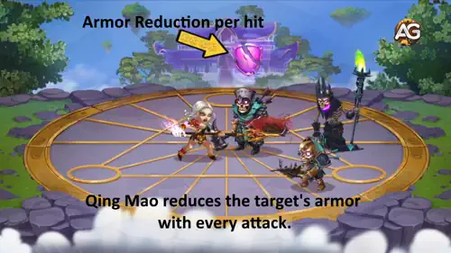
Open Heart Skill - Qing Mao, Hero Wars Dominion Era.
Evolution Priority:Very High – This is Qing Mao's most important skill. The armor reduction amplifies damage from your entire team, not just Qing Mao. More armor reduction = more damage everyone deals. Always upgrade this first.
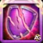
Ascension II: Relentless Open Heart
When you unlock this Ascension skill, Open Heart becomes even more devastating. In addition to reducing armor, Qing Mao now decreases the enemy's maximum health by 100% of her basic attack damage (up to 40% reduction). This means tanky enemies lose a huge chunk of their health pool permanently, making them much easier to eliminate. While Ascension skills take time to unlock, this enhancement makes Open Heart even more valuable.
Max Health Reduction:Up to 40% (100% of basic attack damage)
Best Skin for Qing Mao Hero Wars: Dominion Era
Choosing the right skins for Qing Mao significantly enhances her combat effectiveness. Prioritize the Lunar Skin for its exceptional Physical Attack boost, followed by the Spring and Masquerade skins to maximize her damage output.
Default Skin
Stats gain: Agility +1,365
Physical attack from Agility: +4,095
Armor from Agility: +1,365
Evolution Priority:Medium-High – Provides balanced stats with both offensive (physical attack) and defensive (armor) benefits. Essential baseline stats but not as impactful as specialized attack skins.
Total of Agility Skin Stones for max level: 30,825
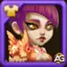
Phoenix Skin
Stats gain: Dodge +2,960
Evolution Priority:Medium – Increases survivability by improving dodge rating, which is useful for a front-line fighter. However, doesn't directly amplify her damage-dealing role, making it less critical than attack-focused skins.
Total of Agility Skin Stones for max level: 55,410
Spring Skin
Stats gain: Physical Attack +7,095
Evolution Priority:Very High – Directly increases her physical attack, dramatically boosting all her damage abilities including her ultimate, Dragon's Claw, and basic attacks. Upgrade this after the Lunar Skin.
Total of Agility Skin Stones for max level: 55,410
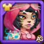
Masquerade Skin
Stats gain: Armor Penetration +10,650
Evolution Priority:High – Excellent synergy with her Open Heart passive that already reduces enemy armor. The armor penetration helps cut through heavily armored tanks even faster. Upgrade this after the Lunar and Spring skins.
Total of Agility Skin Stones for max level: 55,410
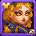
Demonic Skin
Stats gain: Health +106,645
Evolution Priority:Low – While extra health improves survivability, Qing Mao already has high dodge to avoid damage. This skin doesn't enhance her primary role as a damage dealer and armor shredder. Consider this only after maxing attack-oriented skins.
Total of Agility Skin Stones for max level: 55,410
Lunar Skin
Stats gain: Physical Attack +14,190
Power gain: +10,642
Evolution Priority:Top Priority – Qing Mao's strongest offensive skin. Its exceptional Physical Attack bonus directly increases her basic attacks and every damage ability, making it the first skin to prioritize for maximum damage.
Total of Agility Skin Stones for max level: 110,520
Qing Mao Glyph Evolution Priority - Hero Wars: Dominion Era
Glyphs provide powerful permanent stat boosts for Qing Mao. Focus on offensive glyphs first to amplify her damage output and armor-shredding capabilities.
1st Glyph - Physical Attack
The Physical Attack glyph directly enhances Qing Mao's primary damage source. Every skill she has from her ultimate Qing Long to Dragon's Claw and basic attacks scales with physical attack. This glyph provides the highest immediate impact on her overall damage output.
Stats gain: Physical Attack +4,340
Evolution Priority:Very High – This is the most important glyph for Qing Mao. Physical attack directly multiplies the effectiveness of all her damage abilities. Since she's a damage dealer and armor shredder, maximizing her attack stat should always be your top priority. This glyph alone can increase her ultimate damage by thousands of points per hit.
2nd Glyph - Health
The Health glyph increases Qing Mao's survivability by adding to her HP pool. While more health helps her stay in fights longer, it doesn't leverage her natural high dodge rating or enhance her core role as a damage dealer.
Stats gain: Health +62,200
Evolution Priority:Low – Health is the least valuable glyph for Qing Mao. Her defensive strength comes from high dodge, not HP tanking. Since she already avoids many attacks through evasion, raw health doesn't provide as much value. Prioritize this glyph only after maxing all offensive glyphs, or if you specifically need her to survive burst damage in certain matchups.
3rd Glyph - Armor Penetration
Armor Penetration allows Qing Mao to ignore a portion of enemy armor when dealing damage. This creates powerful synergy with her Open Heart passive, which already reduces enemy armor with each attack. Together, they make her incredibly effective against heavily armored tanks.
Stats gain: Armor Penetration +6,500
Evolution Priority:High – Excellent synergy with her kit. Since Qing Mao already shreds armor with her passive, armor penetration compounds this effect, allowing her to cut through even the toughest front-line defenders. This is your second priority after Physical Attack. The combination of armor reduction (from her passive) and armor penetration (from this glyph) creates devastating damage against tanks.
4th Glyph - Dodge
The Dodge glyph improves Qing Mao's already impressive evasion rating, allowing her to avoid even more physical attacks. This increases her survivability as a front-line fighter, helping her stay alive longer to apply armor reduction stacks.
Stats gain: Dodge +1,995
Evolution Priority:Medium – Useful for survivability but not essential. Qing Mao already has high natural dodge, so this glyph provides diminishing returns. While it helps her survive longer against physical damage dealers, it doesn't increase her damage output. Upgrade this after your offensive glyphs (Physical Attack, Armor Penetration, and Agility) are maxed.
5th Glyph - Agility
Agility is Qing Mao's primary stat, providing multiple benefits. Each point of Agility grants physical attack and armor. Since Agility is her main stat, she gains bonus physical attack, making this glyph particularly efficient for her.
Stats gain: Agility +1,135
Physical attack from Agility: +3,405
Armor from Agility: +1,135
Each agility point grants: two points to physical attack, one point to armor, and one extra point to physical attack if agility is the main stat of a hero.
Evolution Priority:Medium-High – Strong balanced option for both offense and defense. This glyph provides +3,405 physical attack (good for damage) plus +1,135 armor (minor defensive boost). While the attack gain is lower than the direct Physical Attack glyph, it's still valuable. Upgrade this as your third priority, after Physical Attack and Armor Penetration glyphs.
Qing Mao Artifact Evolution Priority - Hero Wars: Dominion Era
Artifacts provide game-changing bonuses for Qing Mao. Prioritize her weapon artifact first for its armor penetration and team-wide buff synergy.
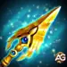
Weapon Artifact: Spear of the Crimson Dawn
The Spear of the Crimson Dawn activates whenever Qing Mao uses her ultimate ability (Qing Long), triggering a powerful Shieldbreaker effect. This grants bonus stats to the entire team for 9 seconds with a 100% activation chance. The massive armor penetration boost amplifies her ability to cut through enemy defenses.
Stats gain: Armor Penetration +50,190
Activation: 100% chance when using ultimate ability
Effect Duration: 9 seconds (team-wide buff)
Evolution Priority:Very High – This is Qing Mao's most valuable artifact. The combination of massive armor penetration (+50,190) with her passive armor reduction creates devastating synergy. Even better, it activates with 100% reliability when she uses her ultimate, providing a team-wide buff that enhances everyone's damage. The Shieldbreaker effect makes your entire team hit harder for 9 seconds. This should always be your first artifact priority.
Book Artifact: Book of Illusions
The Book of Illusions provides additional health and dodge rating. The health helps Qing Mao survive longer in battles, while the dodge synergizes with her naturally high evasion stat, making her even harder to hit with physical attacks.
Stats gain: Health +83,649 | Dodge +4,647
Evolution Priority:Medium-High – Solid defensive option but not critical. The dodge bonus works well with her already high evasion, making her even more slippery against physical damage dealers. However, the large health boost is less valuable since she relies more on avoiding damage than tanking it. Upgrade this as your third priority, after the weapon and ring artifacts.
Ring Artifact: Agility Ring
The Agility Ring boosts Qing Mao's primary stat, providing substantial physical attack and armor. Since Agility is her main attribute, she gains bonus physical attack points, making this artifact incredibly efficient for increasing her overall damage output.
Stats gain: Agility +6,249
Physical attack from Agility: +18,747
Armor from Agility: +6,249
Each agility point grants: two points to physical attack, one point to armor, and one extra point to physical attack if agility is the main stat of a hero.
Evolution Priority:High – Excellent offensive artifact that directly amplifies her damage. The +18,747 physical attack significantly boosts all her abilities ultimate, Dragon's Claw, Spear of Dawn, and basic attacks. The bonus armor also provides some defensive value. This should be your second priority after the weapon artifact, as it provides the best direct damage increase.
Best Patronage for Qing Mao - Hero Wars: Dominion Era
The right pet patronage can significantly enhance Qing Mao's combat effectiveness. Fenris is the absolute best choice for maximizing her damage output.
Fenris is the perfect pet for Qing Mao. He provides Physical Attack and Armor Penetration as patronage bonus stats exactly what she needs to maximize her damage. His patronage skill gives her a chance to blind enemies with basic attacks for 2 seconds, which synergizes beautifully with her Dragon's Claw skill that already applies blind. This creates more opportunities to disable enemy attackers while she shreds their armor. The combination of offensive stats and crowd control makes Fenris the undisputed best choice for Qing Mao.
Cain offers Dodge and Physical Attack as bonus stats. Since Qing Mao already has naturally high dodge, this makes her even more evasive. His patronage skill grants bonus Energy for each successful Dodge, which helps her charge her ultimate (Qing Long) faster. While not as directly powerful as Fenris, Cain is a solid defensive choice that improves her survivability and ultimate uptime. This works well if you're facing heavy physical damage teams where dodging frequently will accelerate her energy generation.
Albus provides Magic Attack and Physical Attack as stats, plus his skill increases Pure damage dealt by the master. Unfortunately, this is the weakest option for Qing Mao. The Magic Attack stat is completely wasted on her since all her abilities scale with Physical Attack. While the Physical Attack bonus is useful, and some pure damage increase might apply to certain mechanics, this patronage doesn't synergize well with her kit. Only consider Albus if you don't have access to Fenris or Cain.
How to Counter Qing Mao - Hero Wars: Dominion Era
Qing Mao relies heavily on applying debuffs to be effective her Open Heart passive reduces enemy armor, and Dragon's Claw applies blind. Heroes that can cleanse or prevent these debuffs significantly diminish her impact in battle.
Celeste hard-counters Qing Mao with her Limbo ability. Her Cursed Flame converts blocked healing into magic damage dealt to the same target, while her Purifying Sphere clears and blocks all negative effects afflicting allies before it disappears. This means Celeste can completely negate Qing Mao's armor reduction from Open Heart and the blind from Dragon's Claw, removing her two most valuable contributions to team fights. Without these debuffs sticking, Qing Mao becomes just an average damage dealer.
Julius protects his team with Nine-Lives Engine. When an ally loses a shield, all negative effects are removed and they gain bonus armor and magic defense for 1.5 seconds. This is devastating for Qing Mao because her armor reduction debuff gets constantly cleansed whenever Julius's shields break. Since he frequently shields multiple allies, Qing Mao's debuffs never stick long enough to matter. The bonus armor granted after shield break also makes targets harder for her to damage.
Nebula uses Serenity to restore health to two nearby allies and remove negative effects from them. This directly counters Qing Mao's armor reduction and blind effects. However, positioning is crucial Nebula must be placed on the front line close to the tank ally to effectively cleanse Qing Mao's debuffs from the right targets. If positioned poorly, Nebula might cleanse backline heroes who aren't even affected by Qing Mao's debuffs, reducing her counter effectiveness.
Sebastian is one of the strongest counters with Ode to Serenity. This skill removes all debuffs from the entire allied team and conjures a shield that prevents debuffs from being applied 15 times. This completely shuts down Qing Mao's value her armor reduction and blind effects get instantly cleansed, and the debuff immunity shield prevents her from reapplying them for an extended duration. Against Sebastian, Qing Mao becomes almost useless since her primary utility (debuffs) cannot function.
Qing Mao Best War Flag - Hero Wars: Dominion Era
War Flags provide powerful team-wide buffs. For Qing Mao, prioritize flags that enhance her Warrior class abilities and front-line survivability.
War Flag of Swift Warriors:
Speeds up skill cooldown for Warriors by 5%.
Qing Mao and Team Benefit: This is the best War Flag for Qing Mao. Since she is a Warrior-class hero, she benefits directly from the 5% cooldown reduction. This means her periodic skills Spear of Dawn (deals physical damage + applies stacks) and Dragon's Claw (blinds enemies) activate more frequently. Faster skill rotation equals more damage output, more blind applications for crowd control, and more armor reduction stacks from her Open Heart passive. If your team composition includes multiple Warriors (like K'arkh, Cleaver, Galahad, etc.), this flag provides massive value by accelerating everyone's offensive abilities.
War Flag of Vanguard:
Once every 4 seconds, heals the front Hero in your team for 1.6% of their Max Health, plus an additional 0.3% for every inserted red pattern.
Qing Mao and Team Benefit: Since Qing Mao is typically positioned on the front line (Position 1 or 2), she directly benefits from this consistent healing every 4 seconds. This War Flag significantly improves her survivability in prolonged battles, allowing her to stay alive longer to continue applying armor reduction and blind debuffs. The healing scales with Max Health and gets even stronger with red patterns inserted. This is especially valuable in Guild Wars, Grand Arena, and other extended combat scenarios where sustain matters. If you're running Qing Mao as your frontmost hero, this flag keeps her in the fight longer.
Team Strategy: This critical damage team leverages Qing Mao's armor reduction to amplify burst damage. Qing Mao applies armor reduction with Open Heart, setting up enemies for massive crits. Sebastian provides shields, debuff immunity, and critical hit buffs. Heidi is the main DPS, dealing devastating critical damage to armor-reduced targets. Lara Croft adds sustained physical damage and additional crowd control. Thea heals and provides energy regeneration to keep ultimates flowing.
Team Composition Notes: This lineup excels by pairing Lara Croft's high-output physical damage with Qing Mao's armor penetration mechanics. Originally designed to challenge teams built around Amira, Nebula, and Heidi, this composition proves versatile in both offensive assaults and defensive setups. However, its tactical approach is well-documented among experienced players, meaning opponents familiar with its patterns can develop effective responses. The team's effectiveness scales significantly with Sebastian's ultimate timing ideally achieving quick activation for maximum impact. While Qing Mao, Sebastian, and Lara Croft form the essential trio, the remaining positions and pet selections can be adjusted based on specific matchup requirements and player preference.
Conclusion: Mastering Qing Mao in Hero Wars Dominion Era
Qing Mao is a versatile Warrior-class hero whose strength lies in her ability to reduce enemy armor and apply crowd control. Her Open Heart passive makes her invaluable against tanky teams, as each attack strips away armor, allowing your damage dealers to hit harder. Combined with her Dragon's Claw blind effect, she disrupts enemy attacks while setting up devastating combos.
To maximize Qing Mao's potential, prioritize upgrading her Ultimate (Qing Long) and Open Heart passive first for maximum damage and armor reduction. Her Spear of the Crimson Dawn weapon artifact should be your top evolution priority, as it grants massive armor penetration and team-wide buffs. Pair her with Fenris as patronage for optimal offensive synergy, combining Physical Attack, Armor Penetration, and additional blind effects.
Remember that Qing Mao excels in physical damage compositions where her armor reduction can be fully exploited by heroes like Heidi, Lara Croft, and other critical damage dealers. However, be cautious when facing debuff removers like Sebastian, Celeste, or Julius they can completely neutralize her utility by cleansing the armor reduction and blind effects that make her so valuable.
With proper investment in skills, artifacts, glyphs, and the right team composition, Qing Mao transforms into a formidable front-line fighter capable of shredding defenses and controlling the battlefield. Focus on maximizing her offensive stats Physical Attack, Armor Penetration, and Agility to unlock her full potential as an armor-shredding specialist in Hero Wars: Dominion Era.
About the Author
Alexandre Domingos holds a postgraduate degree in Engineering and works as a Production Supervisor. In his spare time, he works as a YouTuber, blogger, and webmaster at Alexandre Games, where he is responsible for both content creation and the website’s technical structure, SEO, and performance. He has been immersed in the gaming world since the age of 5, starting on classic platforms such as MSX, Master System, Nintendo, and even an old 286 PC. Since 2019, Alexandre has been creating in-depth content about Hero Wars, Mobile Legends, and other mobile games, producing guides, tutorials, analyses, and advanced strategies for the community.
Did you like our Qing Mao Guide for Hero Wars Web and Facebook? Is there something you didn't understand or would like to suggest changes to? We invite you to join our comment section on the Alexandre Games Blog page. Feel free to express your opinion, clarify your doubts, and share your suggestions. Click the button below to get started:


 Agility Skin Stones for max level: 30,825
Agility Skin Stones for max level: 30,825


") Explore the Hero Wars: Dominion Era event calendar and stay prepared for...
Explore the Hero Wars: Dominion Era event calendar and stay prepared for...
 Redeem your Daily Gifts for Hero Wars: Dominion Era - Web/FB
Redeem your Daily Gifts for Hero Wars: Dominion Era - Web/FB